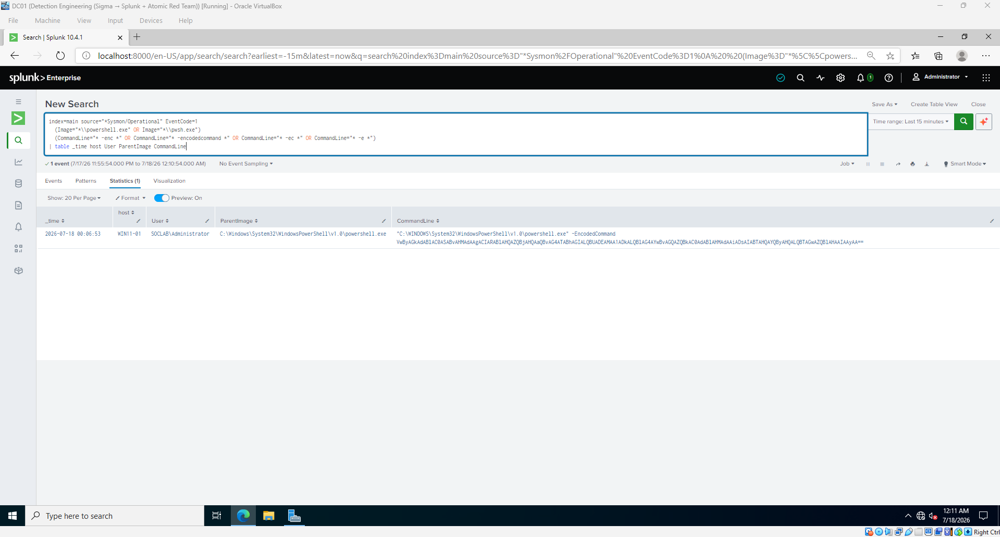
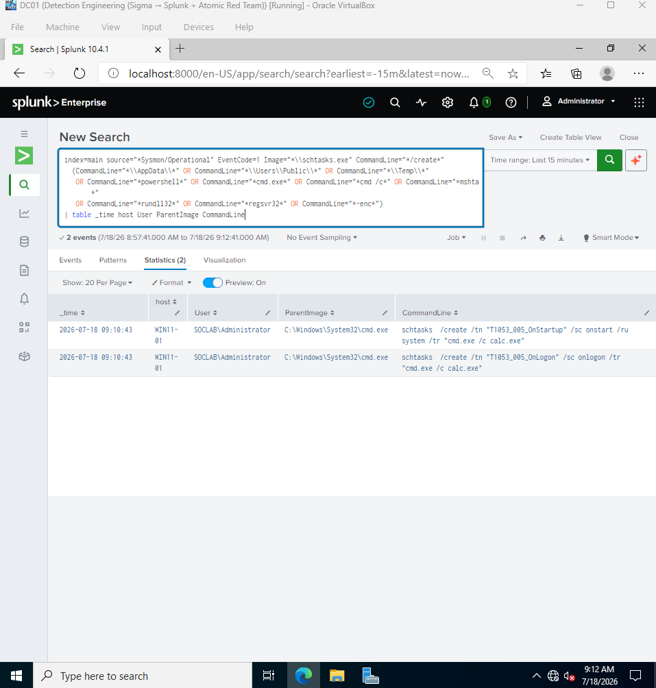
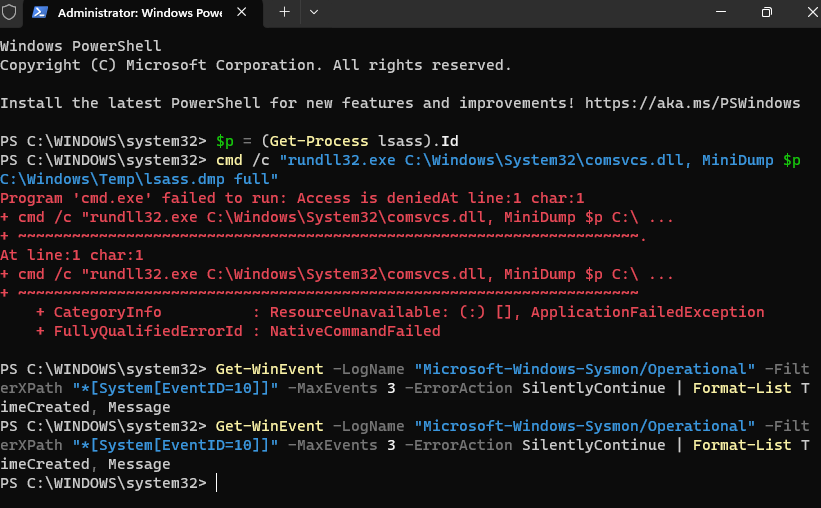
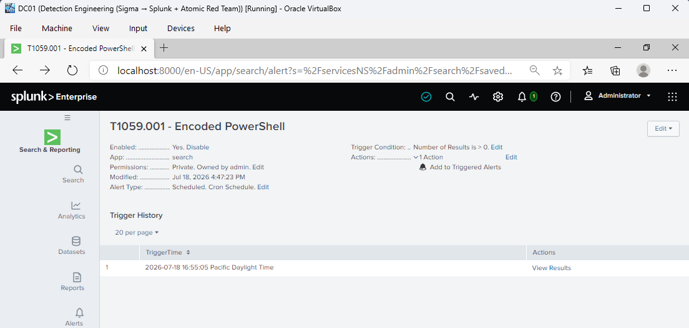

| Network | VirtualBox, isolated Host-Only, domain SOCLAB (hardened base image) |
| DC01 | Splunk Enterprise - indexer + search head, index=main |
| WIN11-01 | Sysmon + Splunk Universal Forwarder, Atomic Red Team (192.168.10.20) |
| KALI-01 | Attacker - NetExec (192.168.10.30) |
I wanted to build a detection pack the way a detection engineer actually builds one - not by writing a pile of rules and hoping they work, but by running the whole loop end to end. Pick techniques attackers really use, write the logic once in Sigma, convert it to Splunk, then prove each rule catches a live attack and stays quiet on normal activity.
The scope was eight techniques spread across six ATT&CK tactics, so the pack would read as a complete story rather than a random grab-bag: execution, persistence, privilege escalation, defense evasion, credential access, and impact. Every rule had to be validated against a real attack - mostly Atomic Red Team, with a couple run by hand where the atomics needed to pull payloads my isolated lab couldn’t reach. The deliverable is the rule set itself, plus the evidence that each one works and the notes on everything I had to fix along the way.
Honestly, the fixing is the part I’m proudest of. A green checkmark on eight rules is fine, but the three problems I ran into - a rule that missed its own test, a data source that wasn’t logging, and an attack the host simply refused to let me run - taught me more than the seven that just worked.
I ran the same five steps for every technique. Writing it down like this made it obvious when I was skipping ahead:
Sigma sits at the centre on purpose. I wrote each rule once in YAML and converted it to Splunk SPL (and Microsoft KQL as a bonus), which is exactly the real workflow - you don’t hand-maintain the same logic in three query languages.
Before a single rule could match anything, I hit a wall that would have quietly broken the entire project. My Sysmon logs were reaching Splunk - 984 process-creation events sitting in the index - but every field I needed was empty. Image, CommandLine, even EventCode: all blank. The events were arriving as raw XmlWinEventLog with nothing parsing the XML into usable fields.
This is the kind of failure that’s dangerous precisely because it’s silent: the rule looks correct, the search runs without error, and it just returns nothing. I chased it down to a missing add-on. The Splunk Add-on for Sysmon can’t do its job alone - it rides on top of the Splunk Add-on for Microsoft Windows, which is the base parser for the XmlWinEventLog sourcetype. That base add-on wasn’t installed on my Splunk box. Once I added it and restarted, the same 984 events came back with real values - Image, CommandLine, ParentImage, all populated. Only then did any detection have a chance of working.
Lesson I wrote down on the spot: confirm the data source actually sees the behaviour before you trust the rule. No fields, no detection - and it fails without a single error message.
Coverage is the headline number in detection engineering, so here it is up front. Eight techniques addressed across six tactics: seven detected, and one prevented outright by the host’s own hardening (more on that in 5.3, because it’s the most interesting result of the lot).
| # | Technique | ATT&CK | Tactic | Data source | Result |
|---|---|---|---|---|---|
| 1 | Encoded PowerShell | T1059.001 | Execution | Sysmon EID 1 | Detected |
| 2 | Registry Run-Key persistence | T1547.001 | Persistence | Sysmon EID 13 | Detected |
| 3 | LSASS credential access | T1003.001 | Credential Access | Sysmon EID 10 | Prevented |
| 4 | Scheduled task creation | T1053.005 | Persist. / PrivEsc | Sysmon EID 1 | Detected |
| 5 | Create local account | T1136.001 | Persistence | Security 4720 | Detected |
| 6 | Delete volume shadow copies | T1490 | Impact | Sysmon EID 1 | Detected |
| 7 | LOLBin abuse (certutil / regsvr32) | T1218 | Defense Evasion | Sysmon EID 1 | Detected |
| 8 | SMB brute force | T1110 | Credential Access | Security 4625 | Detected |
7 detected · 1 prevented · 6 tactics · 0 false positives on the benign baseline.
Rather than dump all eight, I’ve picked the three that best show how the work actually went: the first clean loop, the rule that failed against its own test, and the one that a hardened host wouldn’t let me run at all.
Attackers base64-encode PowerShell with -EncodedCommand so the real command never shows up in plain text. On execution, Sysmon records a process-creation event (ID 1) with the encoded blob sitting right there in the command line. The Sigma logic is simple - PowerShell as the image, an encoding switch in the command line:
logsource: product: windows category: process_creation detection: selection_img: - Image|endswith: ['\powershell.exe', '\pwsh.exe'] selection_flags: CommandLine|contains: [' -enc ', ' -encodedcommand ', ' -ec ', ' -e '] condition: selection_img and selection_flags level: high
Converted to Splunk and pointed at my lab’s index:
index=main source="*Sysmon/Operational" EventCode=1 (Image="*\\powershell.exe" OR Image="*\\pwsh.exe") (CommandLine="* -enc *" OR CommandLine="* -encodedcommand *" OR CommandLine="* -ec *" OR CommandLine="* -e *") | table _time host User ParentImage CommandLine
I ran a controlled encoded command on WIN11-01 with a harmless payload - the same technique the Atomic tests use, minus the Mimikatz download that would have tripped Defender and needed internet. The detection returned exactly one event, with the encoded string visible in the command line. Then I ran a normal Get-Process and confirmed the search stayed empty. True positive, and clean separation from benign PowerShell.

SOCLAB\Administrator.This is the one I’m glad I slowed down on. Scheduled tasks are a favourite for persistence and for running as SYSTEM, so the rule looks for schtasks /create where the task launches something suspicious - a script host, a LOLBin, a user-writable path.
Before running the atomic I did something simple: I read my own rule against the exact command the test would run. The Atomic test creates its tasks with cmd.exe /c calc.exe. My suspicious-terms list had cmd /c - without the .exe. That one missing detail meant the rule would have returned zero events against its own attack and I’d have logged a false “not detected.” I added cmd.exe to the rule and the SPL, then ran the test:
schtasks /create /tn "T1053_005_OnStartup" /sc onstart /ru system /tr "cmd.exe /c calc.exe" schtasks /create /tn "T1053_005_OnLogon" /sc onlogon /tr "cmd.exe /c calc.exe"
Two events came back - and the only term that matched either of them was the cmd.exe I’d just added. A rule that silently misses its own test is worse than no rule, because it gives you false confidence. Reading the logic against the literal attack string, not an approximation of it, is what saved this one.

cmd.exe was added to the rule first.This technique never gave me a detection, and that turned out to be the most valuable result in the whole project.
Dumping LSASS memory is how attackers pull credentials. The rule watches Sysmon’s ProcessAccess event (ID 10) for a process opening lsass.exe with memory-read rights. First problem: Sysmon wasn’t logging EID 10 at all - the config I was using ships ProcessAccess disabled because it’s noisy. So I added an include for lsass.exe to the Sysmon config and reloaded it. That fixed the telemetry.
Then I tried the attack - an LSASS dump using the built-in comsvcs.dll, so nothing needed downloading. It wouldn’t run. Access is denied, and not even from the dump itself - cmd.exe couldn’t launch the command. My base image is a hardened build, and Attack Surface Reduction was blocking the credential-dump pattern at process creation. I turned Defender’s real-time protection off to isolate the cause, and it still refused, which pointed at ASR and LSA Protection (PPL) working together. The attack never reached LSASS, so no EID 10 was ever generated.

I recorded this one as prevented rather than forcing a checkmark, and the lesson is the whole point: prevention can erase the very telemetry a detection depends on. On a well-defended host you can’t rely on endpoint access logs for LSASS - you pair the detection with the prevention and block events (Defender 1121/1122, ASR audit) as the real signal. That’s a more honest and more senior finding than eight identical “it fired.”
Most of my tuning wasn’t about killing false positives - it was about fixing rules that were subtly wrong before they ever went live. Three changes mattered:
| Rule | What was wrong | Fix |
|---|---|---|
| T1053.005 Scheduled task | Only matched cmd /c; the atomic uses cmd.exe /c - a false negative against its own test | Added cmd.exe (0 → 2 events) |
| T1136.001 / T1110 (Security log) | Rule referenced TargetUserName, but this lab’s Security channel is classic WinEventLog, where the field is Account_Name / Source_Network_Address | Adapted the SPL; kept the Sigma canonical |
| T1003.001 LSASS | Sysmon wasn’t logging ProcessAccess (EID 10) at all | Added a lsass.exe include to the Sysmon config |
The field-name issue is worth calling out. The same technique produces different field names in Splunk depending on the log format - XML-rendered Sysmon versus classic Windows events. The right move is to keep the Sigma rule in its canonical schema and let the query layer adapt, which is exactly why writing in Sigma first pays off.
Then the false-positive check: I generated a few minutes of ordinary activity on WIN11-01 - process and service queries, opening and closing Notepad and Calc, ipconfig, systeminfo, a gpupdate - and re-ran the rules over that window. Nothing fired. Zero false positives on normal behaviour, which is what earns a rule the right to become an alert.
With the rules validated and the baseline clean, I promoted the three highest-value ones to scheduled Splunk alerts - Encoded PowerShell, Shadow-Copy Deletion, and SMB Brute Force. Each runs every five minutes and triggers when it returns any result. I deliberately left LSASS off the alert list, since it’s prevented in this environment and would never fire to demonstrate.
To prove the deployment actually works end to end, I re-ran the encoded-PowerShell attack after saving the alert and watched it trigger:

The order here matters, and I got it right the second time: you tune before you deploy. An alert is just a rule that now runs on its own and pages an analyst - deploying one you haven’t confirmed is quiet just schedules noise.
cmd.exe false negative I’d otherwise have shipped.| ATT&CK | Attack used to validate | Result |
|---|---|---|
| T1059.001 | Controlled powershell -EncodedCommand (benign payload) | Detected |
| T1547.001 | Invoke-AtomicTest T1547.001 -TestNumbers 1 (Run-key write) | Detected |
| T1003.001 | comsvcs.dll MiniDump of LSASS | Prevented |
| T1053.005 | Invoke-AtomicTest T1053.005 (scheduled tasks) | Detected |
| T1136.001 | Invoke-AtomicTest T1136.001 (create user) | Detected |
| T1490 | vssadmin delete shadows /all /quiet | Detected |
| T1218 | Manual certutil (encode/decode/urlcache) + regsvr32 squiblydoo | Detected |
| T1110 | NetExec SMB brute force from Kali (8 attempts) | Detected |
Detection-Engineering-Sigma-Splunk/
rules/ 8 Sigma rules (the deliverable)
spl/detections.spl converted Splunk searches
kql/detections.kql converted Microsoft KQL (bonus)
coverage-matrix.md technique -> rule -> test -> result
report/ this report
lab/ full journal + phased screenshot evidence
phase-A..D/ prerequisites, detections, tuning, alerts
Everything in this report is reproducible from the repository’s RUNBOOK.md. All screenshots are the author’s own, captured during the lab.